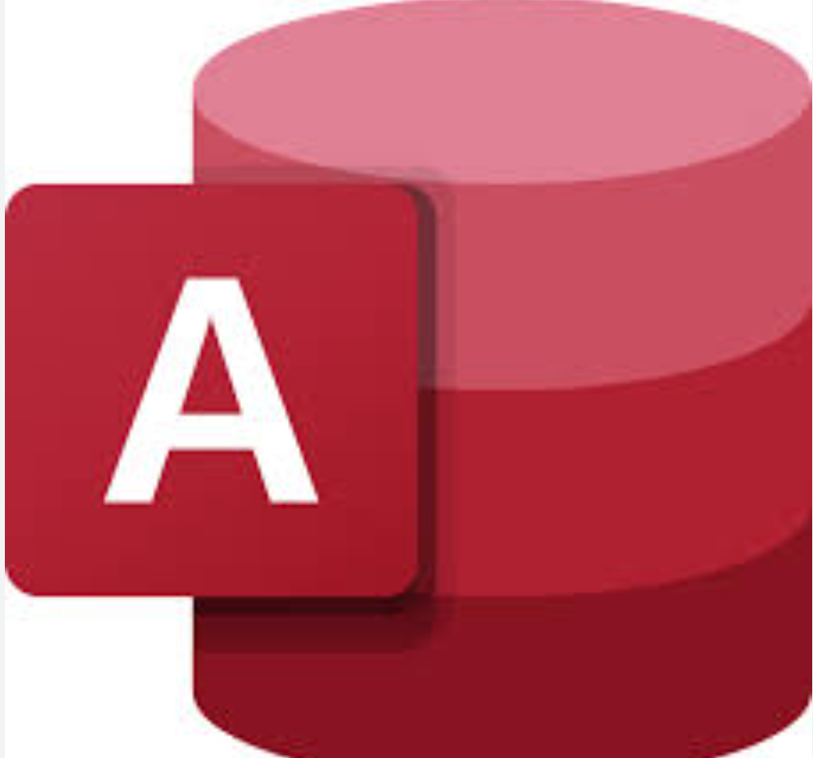

In this project, my focus was on enhancing the usability of raw housing data for analysis purposes. I employed various techniques to achieve this goal, including cleaning the data by removing duplicates, populating columns with missing values, and splitting columns as needed. By meticulously processing and refining the dataset, I ensured its accuracy and completeness, enabling smooth and accurate analysis. The result was a clean and structured dataset.


In this project, I undertook an exploratory data analysis of a COVID-19 dataset using SQL. My objective was to gain valuable insights by examining various aspects of the pandemic on a global scale. By leveraging SQL's capabilities, I conducted thorough analysis and comparisons of key metrics, such as the percentage of full vaccinations, the percentage of deaths and the total number of cases worldwide.
Explore my interactive Tableau dashboard for the COVID-19 project, providing insights into the global pandemic while gaining a comprehensive view of key metrics like confirmed cases, vaccination rates and mortality rates, understanding the pandemic's impact across regions.
In this project, I delved into the correlation between multiple variables and the gross revenue of movies. I aimed to identify the key factor that significantly influences and impacts the overall revenue generated by movies. By conducting a thorough analysis, I explored various aspects such as genre, budget, release date and audience ratings.

Explore my Power BI dashboard showcasing the Data Professionals dataset, which presents an in-depth analysis of the demographics and job trends within the data industry. This dashboard provides visualizations and features that enable you to delve into the data and uncover valuable insights regarding the roles and geographic distributions of data professionals.

In this project, I developed a comprehensive grocery store database in Microsoft Access, creating tables for product, customer, sales, and supplier data. Navigation forms were implemented for easy access to different sections. Queries were designed to analyze and extract valuable insights from the database. This user-friendly solution enables efficient data management, inventory tracking, customer relationship management and informed decision-making.